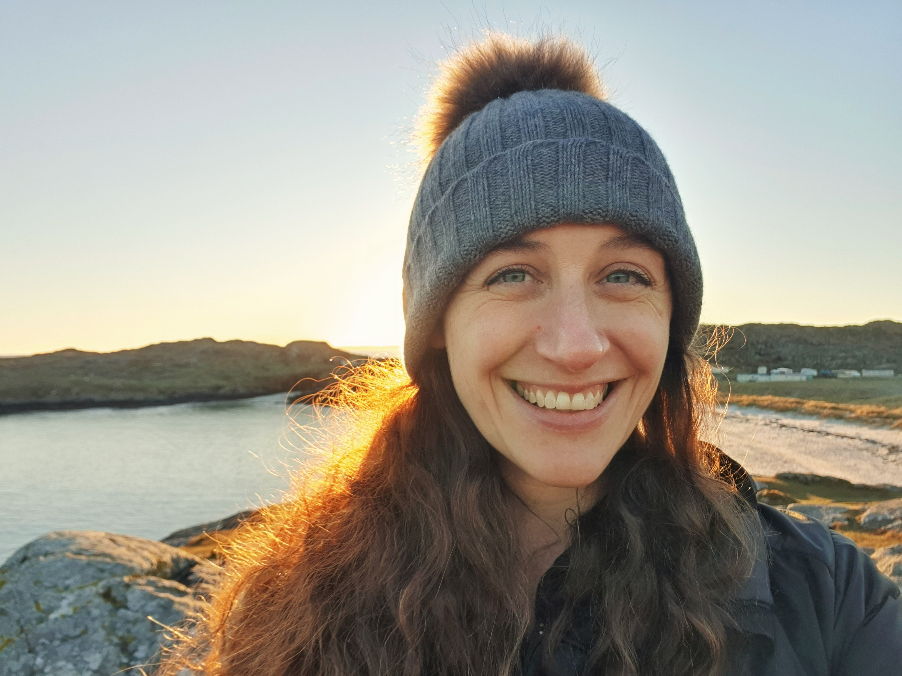
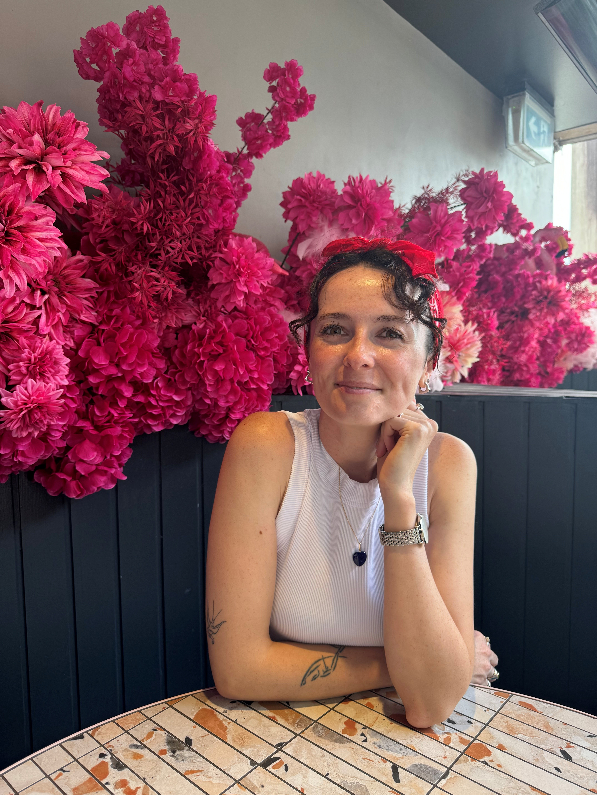
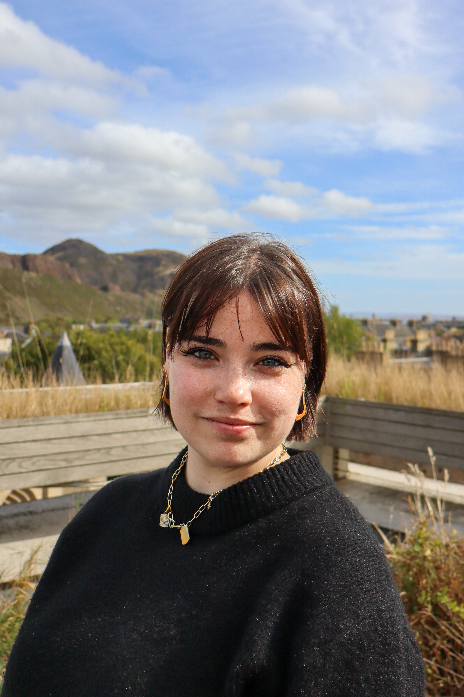
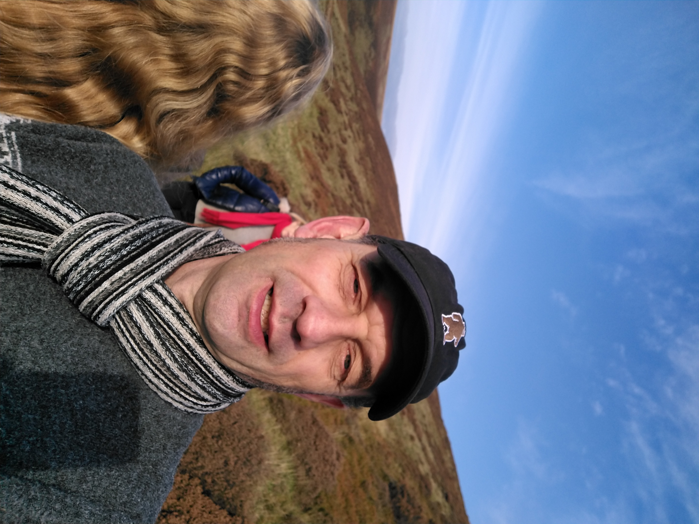
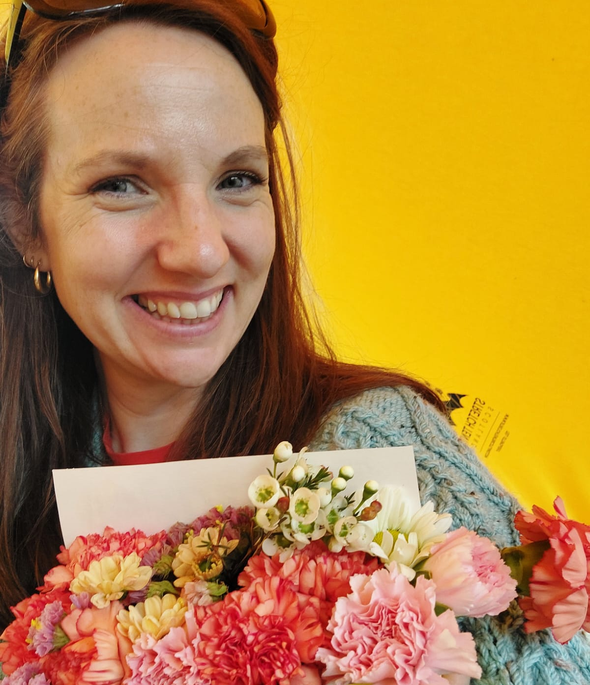
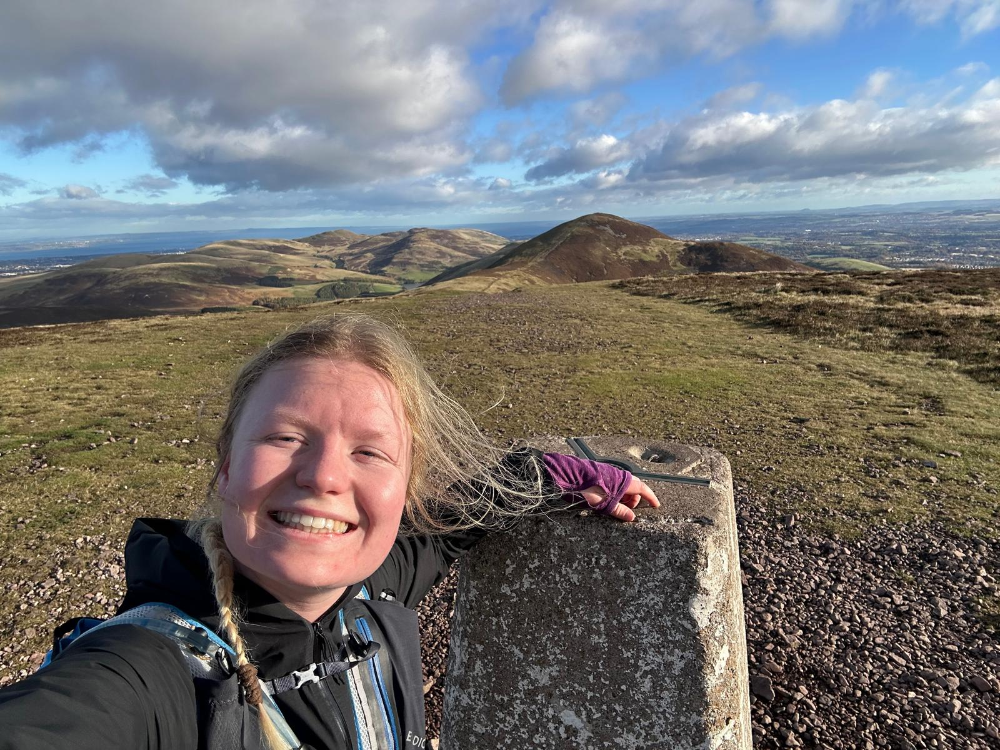

Meet the Team
Here's the team working on the wonderful project.

Livvy Swann
Wellcome Early Career Fellow and Honorary Consultant in Paediatric Infectious Diseases
I lead the Homes, Heat and Healthy Kids Study. As both a children’s doctor and a data scientist, I aim to bridge the clinical and data worlds to ensure the research remains grounded in real-world child health.
What made you want to be part of the project? The chance to work with kind, clever and passionate people on a project we care deeply about.

Hannah Law
Post-doctoral Researcher and Data Analyst
I am exploring the impacts of energy efficiency interventions on the health of young children living in the private rental sector in Scotland, with a particular focus on their respiratory health. We aim to improve the lifelong health of these children by identifying interventions with the highest health co-benefits and ways to reduce unintended consequences of Net Zero policies.
What made you want to be part of the project? I believe that everyone deserves a safe, healthy and affordable home to live in. The Homes, Heat and Healthy Kids team is a diverse and inspiring group of researchers that share my passion for improving the lives of our communities through addressing housing as a crucial social determinant of health.

Eleanor Harrison
Doctoral Researcher in AI for Biomedical Informatics
My research focuses on what ways of making a home warmer are best for a child's respiratory health. My goal is to create an AI algorithm that will suggest what specific type of retrofit should be implemented in a specific home based on what the house is like and who is living there.
What made you want to be part of the project? The chance to create real world change. By bringing together housing and health data in a unique way, we have the opportunity to inform meaningful policies that will make our homes and children healthier.

Tim Wilding
Data Analyst
I combine the large, linked datasets and develop the models required to understand which housing interventions best improve energy efficiency while improving children’s respiratory health outcomes.
What made you want to be part of the project? After a long career in finance, I wanted my work to have more social impact. As a parent of three children, some of whom struggled with respiratory illness when young, this project inspired me professionally and personally.

Tracy Jackson
Associate Dean for Patient and Public Involvement and Engagement
I am lead for the patient and public involvement for the project. This means I support our Parent Group, and other public members to get involved.
What made you want to be part of the project? The Homes, Heat and Healthy Kids team is fantastic to be part of. We use a team science approach. This means that we have lots of people with different skills and experience working together. Our Parent Group are fantastic and play such an important role in the work we're doing. They make sure our research matters and will benefit children, young people and their families.
Caro Fyfe
Post-doctoral Research Associate
I am helping to develop a quantitative framework to examine the relationship between cold, damp housing and children’s health, with a particular focus on energy poverty.
What made you want to be part of the project? I heard Livvy's seminar to the ADR group and was inspired. I have a background in housing and health and wanted to join this cool team.
Laura Gonzalez Rienda
Respiratory Patient and Public Involvement Platform Research and Operations Assistant
I am the Respiratory Patient and Public Involvement and Engagement (PPIE) Platform Research and Operations Assistant. I am a qualified secondary school teacher who supports the Homes, Heat and Healthy Kids with all areas of PPI. I am a very sociable person and I would love to hear from you.
What made you want to be part of the project? The Healthy Homes, Healthy Kids team is incredibly dynamic. I am impressed by the enthusiasm and commitment that drives this project forward. Its impact is both evident and substantial, convincing me that it will serve as a crucial foundation for key research in the future.
Richa Kulkarni
Medical Student, Intercalated BSc in Health Sciences
I am a medical student researcher contributing to the Homes, Heat and Healthy Kids project through evidence synthesis and data analysis, including completing a scoping review during my intercalated research year exploring how home energy efficiency interventions affect children’s respiratory health.
What made you want to be part of the project? I was keen to join the Homes, Heat and Healthy Kids team because it offered the chance to explore health beyond textbooks and wards, and actually understand how everyday living conditions can shape a child’s respiratory health. Being involved has allowed me to develop my research skills while contributing to a project with clear real-world and policy impact.

Freya Semple
Medical Student, Intercalated BSc in Biomedical Data Science
I am a penultimate-year medical student and part of the Homes, Heat and Healthy Kids study team. I contributed towards our scoping review, which mapped the current evidence on how home energy interventions affect paediatric respiratory outcomes. Building on this, I’m now working alongside the wider research team, parents, and school children to co-design an interactive game that helps children understand how to balance keeping their home warm while also ventilating it properly to maintain good air quality and respiratory health. We’re looking forward to launching this game at this year’s Edinburgh Science Festival!
What made you want to be part of the project? This is a dynamic team focused on improving child health! I wanted to be part of the team to learn from everyone involved and understand how data-driven insights can be used to improve housing and paediatric respiratory health. This work is important to me because children spend a large proportion of their time at home, and understanding how their homes can be improved to be safe and healthy places to grow promotes their health and wellbeing. I’m particularly passionate about patient and public involvement, and ensuring research is shaped by, and aligned with, the people it is intended to benefit.

Milly Young
Doctoral Researcher in Precision Medicine
My research is focused on environmental risk factors for winter respiratory diseases in adults. I am collaborating with the Homes, Heat and Healthy Kids team due to the overlap in research on respiratory health and environmental exposures such as housing conditions, climate, and air pollution.